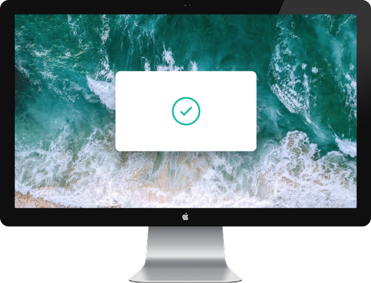
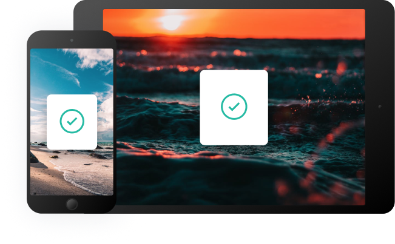

A history of everything you copy
Clipboard allows you to track and organize everything you copy. Instantly access your clipboard on all your devices.
Clipboard allows you to track and organize everything you copy. Instantly access your clipboard on all your devices.
Clipboard instantly stores any item you copy in the cloud, meaning you can access your snippets immediately on all your devices. Our Mac and iOS apps will help you organize everything.

Easily search your snippets by content, category, web address, application, and more.
Instantly saves and syncs snippets across all your devices.
Retrieve any snippets from the first moment you started using the app.
Whether you’re on the go, or at your computer, you can access all your Clipboard snippets in a few simple clicks.
